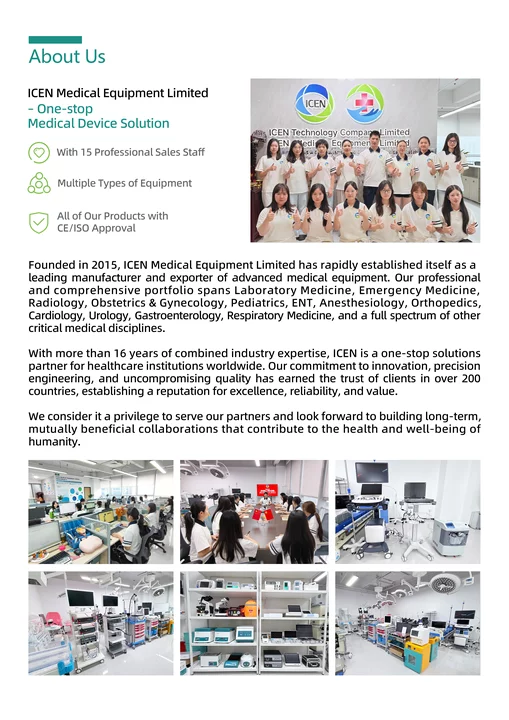
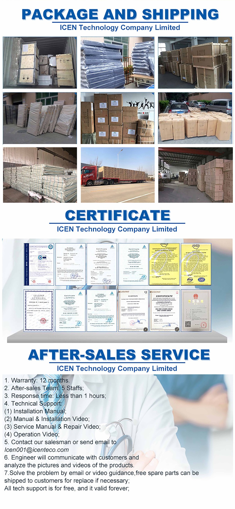
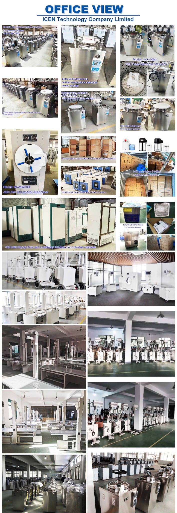
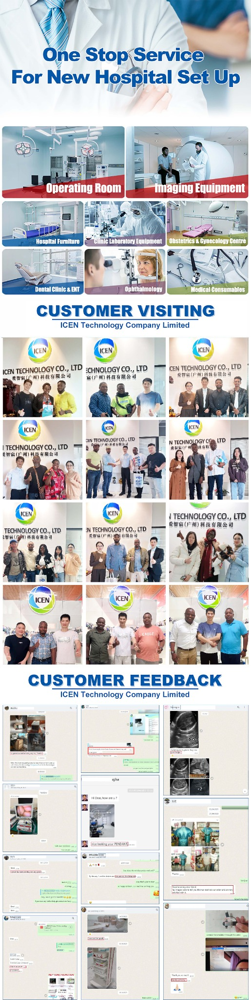

One-Stop Medical Equipment Solution
Professional medical equipment sourcing, project support and global service for hospitals, distributors and healthcare organizations.
Built around equipment, projects and long-term partnerships.
ICEN Medical Equipment Limited was founded in 2015 and operates as a one-stop medical equipment solution provider.
Our portfolio and project scope cover Laboratory Medicine, Emergency Medicine, Radiology, Obstetrics & Gynecology, Pediatrics, ENT, Anesthesiology, Orthopedics, Cardiology, Urology, Gastroenterology, Respiratory Medicine and other critical medical disciplines.
Our company profile states more than 16 years of combined industry expertise, serving customers in more than 50 countries.

From equipment selection to project delivery
A broad one-stop service model across the departments that hospitals and clinics need.
Operating Room
Anesthesia, surgical and critical-care equipment sourcing.
Imaging Equipment
Ultrasound, digital radiography and mobile imaging systems.
Hospital Furniture
Hospital beds, furniture and clinical equipment procurement.
Clinical Laboratory
Hematology, chemistry and laboratory equipment supply.
Obstetrics & Gynecology
Ultrasound and related diagnostic equipment solutions.
Dental & ENT
Selected equipment for specialist clinics and practices.
Ophthalmology
Equipment sourcing for eye-care and diagnostic services.
Medical Consumables
Additional procurement support for complete projects.
Make the paperwork part of the project
CE / ISO approval and certificates are presented product- and market-specifically rather than as a blanket claim. Request the applicable certificate or declaration for the model you are considering.


Support after the shipment matters.
Our after-sales service covers a 12-month warranty, a 5-person after-sales team, rapid response, technical support and installation / operation / service videos.
- 12-month warranty
- 5-person after-sales team
- Installation manual and installation video support
- Operation and service / repair video guidance
- Engineer communication using product pictures and videos
- Spare-parts support where necessary, according to project terms
Customers, visits and feedback are part of the story.
Customer visits, feedback and project delivery moments, presented as company proof.

Customer Visits & Feedback
Team & Equipment Environment
Shipping, Certificates & Support
Need a multi-category medical equipment supplier?
Send your target products, destination market and estimated quantity. We will review the requirement and coordinate the next step.